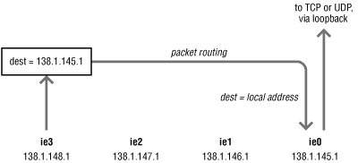

16.5. Server tuning
If the server is not able to field new
requests or
efficiently schedule and handle those that it does receive, then
overall performance suffers. In some cases, the only way to rectify
the problem is to add a new server or upgrade existing hardware.
However, identification of the problem areas should be a prerequisite
for any hardware changes, and some analyses may point to software
configuration changes that provide sufficient relief. The first area
to examine is the server's CPU utilization.
16.5.1. CPU loading
The CPU speed of a pure NFS server
is rarely a constraining factor. Once
the
nfsd thread gets scheduled, and has read and
decoded an RPC request, it doesn't do much more within the NFS
protocol that requires CPU cycles. Other parts of the system, such as
the Unix filesystem and cache management code, may use CPU cycles to
perform work given to them by NFS requests. NFS usually poses a light
load on a server that is providing pure NFS service. However, very
few servers are used solely for NFS service. More common is a central
server that performs mail spool and delivery functions, serves
telnet, and provides NFS file service.
There are two aspects to CPU loading: increased
nfsd thread scheduling latency, and decreased
performance of server-resident, CPU-bound processes. Normally, the
nfsd threads will run as soon as a request
arrives, because they are running with a kernel process priority that
is higher than that of all user processes. However, if there are
other processes
doing I/O, or running in the kernel
(doing system calls) the latency to schedule the
nfsd threads is increased. Instead of getting
the CPU as soon as a request arrives, the
nfsd
thread must wait until the next context switch, when the process with
the CPU uses up its time slice or goes to sleep. Running an excessive
number of interactive processes on an NFS server will generate enough
I/O activity to impact NFS performance. These loads affect a
server's ability to schedule its
nfsd
threads; latency in scheduling the threads translates into decreased
NFS request handling capacity since the
nfsd
threads cannot accept incoming requests as quickly. Systems with more
than one CPU have additional horse-power to schedule and run its
applications and
nfsd threads. Many SMP NFS
servers scale very well as CPUs are added to the configuration. In
many cases doubling the number of CPUs nearly doubles the maximum
throughput provided by the NFS server.
The other aspect of CPU loading is the effect of
nfsd threads on other user-level processes. The
nfsd threads run entirely in the kernel, and
therefore they run at a higher priority than other user-level
processes.
nfsd threads take priority over other
user-level processes, so CPU cycles spent on NFS activity are taken
away from user processes. If you are running CPU-bound
(computational) processes on your NFS servers, they will not impact
NFS performance. Instead, handling NFS requests cripples the
performance of the CPU-bound processes, since the
nfsd threads always get the CPU before they do.
CPU loading is easy to gauge using any number of
utilities
that read the CPU utilization figures from the kernel.
vmstat is one of the
simplest tools that breaks CPU usage into user, system, and idle time
components:
% vmstat 10
procs memory page disk faults cpu
r b w swap free re mf pi po fr de sr dd f0 s0 -- in sy cs us sy id
...Ignore first line of output
0 0 34 667928 295816 0 0 0 0 0 0 0 1 0 0 0 174 126 73 0 1 99
The last three columns show where the CPU cycles are expended. If the
server is CPU bound, the
idle time decreases to
zero. When
nfsd threads are waiting for disk
operations to complete, and there is no other system activity, the
CPU is idle, not accumulating cycles in
system
mode. The
system column shows the amount of time
spent executing system code, exclusive of time waiting for disks or
other devices. If the NFS server has very little (less than 10%) CPU
idle time, consider adding CPUs, upgrading to a faster server, or
moving some CPU-bound processes off of the NFS server.
The "pureness" of NFS service provided by a machine and
the type of other work done by the CPU determines how much of an
impact CPU loading has on its NFS response time. A machine used for
print spooling, hardwire terminal server, or modem line connections,
for example, is forced to handle large numbers of high-priority
interrupts from the serial line controllers. If there is a sufficient
level of high-priority activity, the server may miss incoming network
traffic. Use
iostat,
vmstat, or similar
tools to watch for large numbers of
interrupts. Every interrupt requires CPU time to service it, and
takes away from the CPU availability for NFS.
If an NFS server must be used as a home for terminals, consider using
a networked terminal server instead of hardwired terminals.
[46] The largest advantage of terminal servers is that they
can accept terminal output in large buffers. Instead of writing a
screenful of output a character at a time over a serial line, a host
writing to a terminal on a terminal server sends it one or two
packets containing all of the output. Streamlining the terminal and
NFS input and output sources places an additional load on the
server's network interface and on the network itself. These
factors must be considered when planning or expanding the base of
terminal service.
Along these lines, NFS servers do not necessarily make the best
gateway hosts. Each fraction of its network bandwidth that is devoted
to forwarding packets or converting protocols is taken away from NFS
service. If an NFS server is used as a router between two or more
networks, it is possible that the non-NFS traffic occludes the NFS
packets. The actual performance effects, if any, will be determined
by the bandwidth of the server's network interfaces and other
CPU loading
factors.
16.5.2. NFS server threads
The default number of
nfsd threads is
chosen
empirically by the system vendor, and
provides average performance under average conditions. The number of
threads is specified as an argument to the
nfsd
daemon when it is
started
from the boot scripts:
/usr/lib/nfs/nfsd -a 16
This example starts 16 kernel
nfsd threads.
In Solaris, the
nfsd daemon creates multiple
kernel threads that perform the actual filesystem operations. It
exists as a user-level process in order to establish new connections
to clients, allowing a server to accept more NFS requests while other
nfsd threads are waiting for a disk operation to
complete. Increasing the number of server-side threads improves NFS
performance by allowing the server to grab incoming requests more
quickly. Increasing
nfsd threads without bound
can adversely affect other system resources by dedicating excessive
compute resources to NFS, making the optimal choice an exercise in
observation and tuning.
16.5.2.1. Context switching overhead
All
nfsd threads run in the kernel and
do not context switch in the same way as
user-level processes do. The two major costs associated with a
context switch are loading the address translation cache and resuming
the newly scheduled task on the CPU. In the case of NFS server
threads, both of these costs are near zero. All of the NFS server
code lives in the kernel, and therefore has no user-level address
translations loaded in the memory management unit. In addition, the
task-to-task switch code in most kernels is on the order of a few
hundred instructions. Systems can context switch much faster than the
network can deliver NFS requests.
NFS server threads don't impose the "usual" context
switching load on a system because all of the NFS server code is in
the kernel. Instead of using a per-process context descriptor or a
user-level process "slot" in the memory management unit,
the
nfsd threads use the kernel's address
space mappings. This eliminates the address translation
loading cost of a
context switch.
16.5.2.2. Choosing the number of server threads
The maximum number of server threads can
be specified as a parameter to the
nfsd daemon:
# /usr/lib/nfs/nfsd -a 16
The
-a directive indicates that the daemon
should listen on all available transports. In this example the daemon
allows a maximum of 16 NFS requests to be serviced concurrently. The
nfsd threads are created on demand, so you are
only setting a high water mark, not the actual number of threads. If
you configure too many threads, the unused threads will not be
created. You can throttle NFS server usage by limiting the maximum
number of
nfsd threads, allowing the NFS server
to concentrate on performing other tasks.
It is hard to come up with a magic formula to compute the ideal
number of
nfsd threads, since hardware and NFS
implementations vary considerably between vendors. For example, at
the time of this writing, Sun servers are recommended
[47] to use the maximum of:
-
2 nfsd threads for each active client process
-
16 to 32 nfsd threads for each CPU
-
16 nfsd threads per 10Mb network or 160 per
100Mb
network
16.5.3. Memory usage
NFS uses the server's
page
cache (in SunOS 4.x, Solaris and System
V Release 4) for file blocks read in NFS
read
requests. Because these systems implement page mapping, the NFS
server will use available page frames to cache file pages, and
use
the
buffer
cache
[48] to store UFS
inode and file metadata (direct and indirect blocks).
In Solaris, you can view the buffer cache statistics by using
sar -b. This will show you the number of data
transfers per second between system buffers and disk
(
bread/s &
bwrite/s),
the number of accesses to the system buffers (logical reads and
writes identified by
lread/s &
lwrit/s), the cache hit ratios
(
%rcache &
%wcache),
and the number of physical reads and writes using the raw device
mechanism (
pread/s &
pwrit/s):
# sar -b 20 5
SunOS bunker 5.8 Generic sun4u 12/06/2000
10:39:01 bread/s lread/s %rcache bwrit/s lwrit/s %wcache pread/s pwrit/s
10:39:22 19 252 93 34 103 67 0 0
10:39:43 21 612 97 46 314 85 0 0
10:40:03 20 430 95 35 219 84 0 0
10:40:24 35 737 95 49 323 85 0 0
10:40:45 21 701 97 60 389 85 0 0
Average 23 546 96 45 270 83 0 0
In practice, a cache hit ratio of 100% is hard to achieve due to lack
of access locality by the NFS clients, consequently a cache hit ratio
of around 90% is considered acceptable. By default, Solaris grows the
dynamically sized buffer cache, as needed, until it reaches a high
watermark specified by the
bufhwm kernel
parameter. By default, Solaris limits this value to 2% of physical
memory in the system. In most cases, this 2%
[49] ceiling is more
than enough since the buffer cache is only used to cache inode and
metadata information. You can use the
sysdef
command to view its value:
# sysdef
...
*
* Tunable Parameters
*
41385984 maximum memory allowed in buffer cache (bufhwm)
...
If you need to modify the default value of
bufhwm, set its new value in
/etc/system, or use
adb as
described in
Chapter 15, "Debugging Network Problems".
The actual file contents are cached in the page cache, and by default
the filesystem will cache as many pages as possible. There is no high
watermark, potentially causing the page cache to grow and consume all
available memory. This means that all process memory that has not
been used recently by local applications may be reclaimed for use by
the filesystem page cache, possibly causing local processes to page
excessively.
If the server is used for non-NFS purposes, enable priority paging to
ensure that it has enough memory to run all of its processes without
paging. Priority paging prevents the filesystem from consuming
excessive memory by limiting the file cache so that filesystem I/O
does not cause unnecessary paging of applications. The filesystem can
still grow to use free memory, but cannot take memory from other
applications on the system. Enable priority paging by adding the
following line to
/etc/system and reboot:
*
* Enable Priority Paging
*
set priority_paging=1
Priority paging can also be enabled on a live system. Refer to the
excellent
Solaris Internals book written by
Mauro and McDougall and published by Sun Microsystems Press for an
in-depth explanation of Priority Paging and File System Caching in
Solaris. The following procedure for enabling priority paging on a
live 64-bit system originally appeared on their book:
# adb -kw /dev/ksyms /dev/mem
physmem 3ac8
lotsfree/E
lotsfree:
lotsfree: 234 /* value of lotsfree is printed */
cachefree/Z 0t468 /* set to twice the value of lotsfree */
cachefree: ea = 1d4
dyncachefree/Z 0t468 /* set to twice the value of lotsfree */
dyncachefree: ea = 1d4
cachefree/E
cachefree:
cachefree: 468
dyncachefree/E
dyncachefree:
dyncachefree: 468
Setting
priority_ paging=1 in
/etc/system causes a new memory tunable,
cachefree, to be set to twice the old paging
high watermark,
lotsfree, when the system boots.
The previous
adb procedure does the equivalent
work on a live system.
cachefree scales
proportionally to other memory parameters used by the Solaris Virtual
Memory System. Again, refer to the
Solaris
Internals book for an in-depth explanation. The same
adb procedure can be performed on a 32-bit
system by replacing the
/E directives with
/D to print the
value of a 32-bit quantity and
/Z with
/W to set the value
of the 32-bit quantity.
16.5.4. Disk and filesystem throughput
For NFS requests requiring disk access, the
constraining performance factor can often be the server's
ability to turn around disk requests. A well-conditioned network
feels sluggish if the file server is not capable of handling the load
placed on it. While there are both network and client-side NFS
parameters that may be tuned, optimizing the server's use of
its disks and filesystems can deliver large benefit. Efficiency in
accessing the disks, adequate kernel table sizes, and an equitable
distribution of requests over all disks providing NFS service
determine the round-trip filesystem delay.
A basic argument about NFS performance centers on the overhead
imposed by the network when reading or writing to a remote disk. If
identical disks are available on a remote server and on the local
host, total disk throughput will be better with the local disk. This
is not grounds for an out-of-hand rejection of NFS for two reasons:
NFS provides a measure of transparency and ease of system
administration that is lost with multiple local disks, and
centralized disk resources on a server take advantage of economies of
scale. A large, fast disk or disk array on a server provides better
throughput, with the network overhead, than a slower local disk if
the decrease in disk access time outweighs the cost of the network
data transfer.
16.5.4.1. Unix filesystem effects
NFS Version 2 write operations are not often able to take advantage
of disk controller optimizations or caching when multiple clients
write to different areas on the same disk. Many controllers use an
elevator-seek algorithm to schedule disk operations according to the
disk track number accessed, minimizing seek time. These optimizations
are of little value if the disk request queue is never more than one
or two operations deep. Read operations suffer from similar problems
because read-ahead caching done by the controller is wasted if
consecutive read operations are from different clients using
different parts of the disk. NFS Version 3 enables the server to take
better advantage of controller optimizations through the use of the
two-phase commit write.
Writing large files multiplies the number of NFS write operations
that must be performed. As a file grows beyond the number of blocks
described in its inode, indirect and double indirect blocks are used
to point to additional arrays of data blocks. A file that has grown
to several megabytes, for example, requires three write operations to
update its indirect, double indirect, and data blocks on each write
operation. The design of the Unix filesystem is ideal for small
files, but imposes a penalty on large files.
Large directories also adversely impact NFS performance. Directories
are searched linearly during an NFS lookup
operation; the time to locate a named directory component is directly
proportional to the size of the directory and the position of a name
in the directory. Doubling the number of entries in a directory will,
on average, double the time required to locate any given entry.
Furthermore, reading a large directory from a remote host may require
the server to respond with several packets instead of a single packet
containing the entire directory structure.
16.5.4.2. Disk array caching and Prestoserve
As described in
Section 16.4.2.1, "NFS writes (NFS Version 2 versus NFS Version 3)", synchronous NFS
Version 2 writes are slow because the server needs to flush the data
to
disk before an acknowledgment to the
client can be generated. One way of speeding up the disk access is by
using host-based fast nonvolatile memory. This battery-backed
nonvolatile memory serves as temporary cache for the data before it
is written to the disk. The server can acknowledge the write request
as soon as the request is placed in the cache, since the cache is
considered permanent storage (since it's memory-backed and it
can survive reboots). Examples of host-based accelerators include the
Sun StorEdge Fast Write Cache product from Sun
Microsystems, Inc., and the
Prestoserve
board from Legato Systems, Inc. They both intercept the synchronous
filesystem write operations to later flush the data to the disk
drive; significantly improving synchronous filesystem write
performance.
Newer disk array systems provide similar benefits by placing the data
written in the disk array's NVRAM before the data is written to
the actual disk platters. In addition, disk arrays provide extra
features that increase data availability through the use of mirroring
and parity bits, and increased throughput through the use of
striping. There are many good books describing the Berkeley
RAID
[50] concepts. Refer to
Brian Wong's
Configuration and Capacity Planning for
Solaris Servers book, published by Sun Microsystems Press,
for a thorough description of disk array caching and
Prestoserve boards in the Sun architecture.
16.5.4.3. Disk load balancing
If you have one or more "hot" disks that receive an
unequal share of requests, your NFS performance suffers. To keep
requests in fairly even queues, you must balance your NFS load across
your disks.
Server response time is improved by balancing the load among all
disks and minimizing the average waiting time for disk service. Disk
balancing entails putting heavily used filesystems on separate disks
so that requests for them may be serviced in parallel. This division
of labor is particularly important for diskless client servers. If
all clients have their root and swap filesystems on a single disk,
requests using that disk may far outnumber those using any other on
the server. Performance of each diskless client is degraded, as the
single path to the target disk is a bottleneck. Dividing client
partitions among several disks improves the overall throughput of the
client root and swap filesystem requests.
The average waiting time endured by each request is a function of the
random disk transfer rate and of the backlog of requests for that
disk. Use the
iostat -D utility to check the
utilization of each disk, and look for imbalance in the disk queues.
The
rps and
wps values are
the number of read and write operations, per second, performed on
each disk device, and the
util column shows the
utilization of the disk's bandwidth:
% iostat -D 5
md10 md11 md12 md13
rps wps util rps wps util rps wps util rps wps util
17 45 33.7 5 4 10.5 3 3 7.5 5 5 11.6
1 5 6.1 17 20 43.7 1 1 2.0 1 0 1.1
2 7 10.4 14 22 42.0 0 0 0.7 0 1 2.3
If the disk queues are grossly uneven, consider shuffling data on the
filesystems to spread the load across more disks. Most medium to
large servers take advantage of their disk storage array volume
managers to provide some flavor of RAID to stripe data among multiple
disks.
If all of your disks are more than 75-80% utilized, you are disk
bound and either need faster disks, more disks, or an environment
that makes fewer disk requests. Tuning kernel and client
configurations usually helps to reduce the number of disk requests
made by
NFS clients.
16.5.5. Kernel configuration
A significant amount of NFS requests require only
information in the
underlying inode for a file, rather than access to the data blocks
composing the file. A bottleneck can be introduced in the inode
table, which serves as a cache for recently opened files. If file
references from NFS clients frequently require reloading entries in
the inode table, then the file server is forced to perform expensive
linear searches through disk-based directory structures for the new
file pathname requiring an inode table entry.
Recently read directory entries are cached on the NFS server in the
directory name lookup cache, better known as the DNLC. A sufficiently
large cache speeds NFS
lookup operations by
eliminating the need to read directories from disk. Taking a
directory cache miss is a fairly expensive operation, since the
directory must be read from disk and searched linearly for the named
component. For simplicity and storage, many implementations only
cache pathnames under 30 characters long. Solaris removes this
limitation by caching all pathnames regardless of their length. You
can check your directory name lookup cache hit rate by running
vmstat -s on your NFS server:
% vmstat -s
...Page and swap info...
621833654 total name lookups (cache hits 96%)
...CPU info...
If you are hitting the cache less than 90% of the time, increase
ncsize on the NFS server. The
ncsize kernel tunable specifies the number of
entries cached by the DNLC.
In Solaris, every file currently opened holds an inode cache entry
active, making the inode readily available without the need to access
the disk. To improve performance, inodes for files recently opened
are kept in this cache, anticipating that they may be accessed again
in the not too distant future. Furthermore, inodes of files recently
closed are maintained in an inactive inode cache, in anticipation
that the same files may be reopened again soon. Since NFS does not
define an open operation, NFS clients accessing files on the server
will not hold the file open during access, causing the inodes for
these files to only be cached in the inactive inode cache. This
caching greatly improves future accesses by NFS clients, allowing
them to benefit from the cached inode information instead of having
to go to disk to satisfy the operation. The size of the inactive
inode table is determined by the
ufs_ninode
kernel tunable and is set to the value of
ncsize
during boot. If you
update
ncsize during
runtime, make sure to also update the value of
ufs_ninode accordingly. The default value for
ncsize is (
maxusers * 68) +
360.
Maxusers can be defined as the number of
simultaneous users, plus some margin for daemons, and be set to about
one user per megabyte of RAM in the system, with a default limit of
4096 in
Solaris.
16.5.6. Cross-mounting filesystems
An NFS client may find many of its
processes in a high-priority wait
state when an NFS server on which it relies stops responding for any
reason. If two servers mount filesystems from each other, and the
filesystems are hard-mounted, it is possible for processes on each
server to wait on NFS responses from the other. To avoid a deadlock,
in which processes on two NFS servers go to sleep waiting on each
other, cross-mounting of servers should be avoided. This is
particularly important in a network that uses hard-mounted NFS
filesystems with fairly large timeout and retransmission count
parameters, making it hard to interrupt the processes that are
waiting on the NFS server.
If filesystem access requires cross-mounted filesystem, they should
be mounted with the background (
bg)
option.
[51] This ensures that servers will not go
into a deadly embrace after a power failure or other reboot. During
the boot process, a machine attempts to mount its NFS filesystems
before it accepts any incoming NFS requests. If two file servers
request each other's services, and boot at about the same time,
it is likely that they will attempt to cross-mount their filesystems
before either server is ready to provide NFS service. With the
bg option, each NFS mount will time out and be
put into the background. Eventually the servers will complete their
boot processes, and when the network services are started the
backgrounded mounts complete.
This deadlock problem goes away when your NFS clients use the
automounter in place of hard-mounts. Most systems today heavily rely
on the automounter to administer NFS mounts. Also note that the
bg mount option is for use by the
mount command only. It is not needed when the
mounts are administered with the
automounter.
16.5.7. Multihomed servers
When a server exports NFS filesystems on
more than one network interface, it may
expend a measurable number of CPU cycles forwarding packets between
interfaces. Consider host
boris on four
networks:
138.1.148.1 boris-bb4
138.1.147.1 boris-bb3
138.1.146.1 boris-bb2
138.1.145.1 boris-bb1 boris
Hosts on network 138.1.148.0 are able to "see"
boris because
boris
forwards packets from any one of its network interfaces to the other.
Hosts on the 138.1.148.0 network may mount filesystems from either
hostname:
boris:/export/boris
boris-bb4:/export/boris

Figure 16-2. A multihomed host
The second form is preferable on network 138.1.148.0 because it does
not require
boris to forward packets to its
other interface's input queue. Likewise, on network
138.1.145.0, the
boris:/export/boris form is
preferable. Even though the requests are going to the same physical
machine, requests that are addressed to the "wrong"
server must be forwarded, as shown in
Figure 16-2.
This adds to the IP protocol processing overhead. If the packet
forwarding must be done for every NFS RPC request, then
boris uses more CPU cycles to provide NFS
service.
Fortunately, the automounter handles
this automatically. It is able to
determine what addresses are local to its subnetwork and give strong
preference to them. If the server reply is not received within a
given timeout, the automounter
will use
an alternate server address, as
explained in
Section 9.5.1, "Replicated servers".
 |  |  |
| 16.4. Identifying NFS performance bottlenecks |  | 17. Network Performance Analysis |